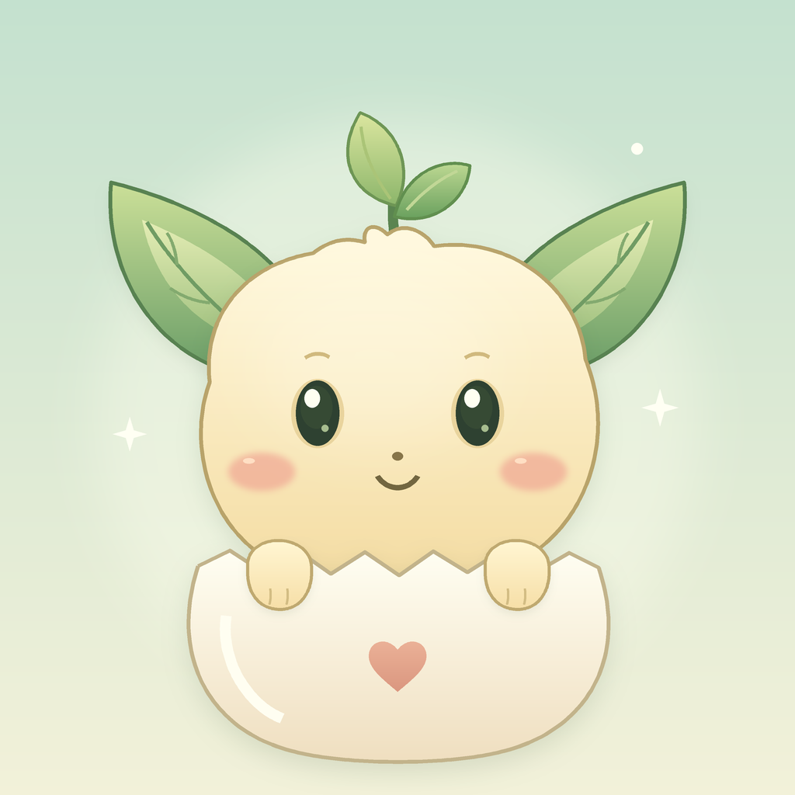
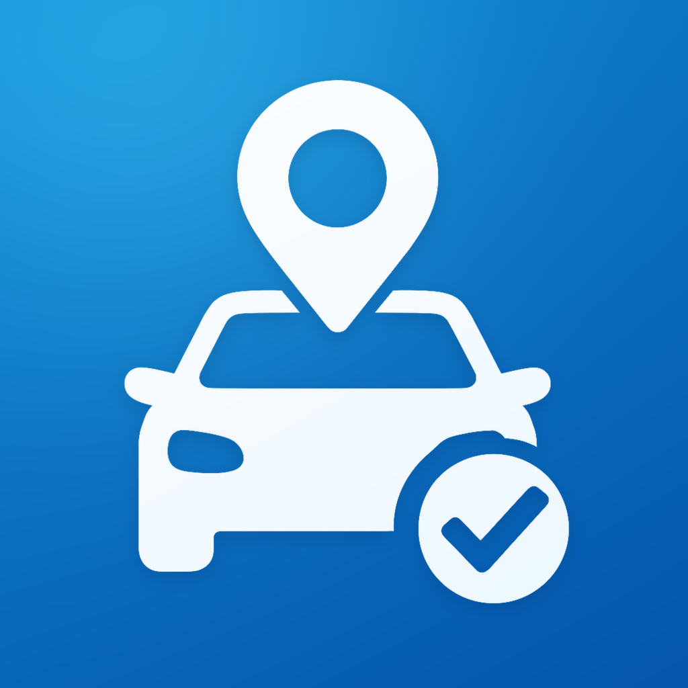

iPhone / Apple Watch
ひといき
楽しい時間に、ひといき。
楽しい時間に、ひといき。飲み会の経過時間とおひらき予定を確かめながら、お水・お酒・今の気持ちを記録。Apple Watchからも、手元でそっと振り返れます。
FOR YOUR EVERYDAY
自分のペースも、ことばと遊ぶ時間も、車を停めてからの帰り道も。
毎日にそっと手を貸す、3つのアプリです。
iPhone / Apple Watch
楽しい時間に、ひといき。
楽しい時間に、ひといき。飲み会の経過時間とおひらき予定を確かめながら、お水・お酒・今の気持ちを記録。Apple Watchからも、手元でそっと振り返れます。

iPhone
ことばと、いっしょにそだつ。
たまごから始まる、小さななかまとの毎日。おせわ、10種類のミニゲーム、46語のことばアルバム。17種類の出会いを集めながら、英語の音に親しめます。

iPhone / iPad / Apple Watch
停めた場所も、戻る道も。
「どこに停めた？」を、もう迷わない時間へ。iPhoneやApple Watchから駐車場所を保存。フロアや区画のメモ、経過時間、リマインダー、車までの徒歩ルートをひとつに。
SUPPORT
不具合やご要望は、アプリ名・バージョン・機種・起きたことを添えて、下記までお知らせください。パスワードなどの秘密情報や、記録・写真の添付は不要です。
ひといき・ParkingSpotでは、端末の通知許可と集中モードをご確認ください。Apple Watchへの通知は、端末の利用状態とWatchアプリの通知ミラーリング設定によって変わります。アプリを開いて、進行中の記録と通知設定もご確認ください。
ゲームのあとはおせわが必要です。あかちゃんは2回、成長後は3回のおせわで次のゲームを遊べます。10分遊ぶと10分の休憩が入り、アプリを閉じている間も休憩時間は進みます。
ひといきはiPhoneで飲み会を開始し、Watchで時間の確認、お水・お酒の記録、おひらきができます。ParkingSpotはWatchから現在地の保存、時間の確認、徒歩案内、駐車の終了ができます。ペア端末が通信できるときに記録が同期され、写真はWatchへ同期しません。ワードペットはiPhone用です。
ParkingSpotの地図・検索・徒歩ルートには通信が必要です。位置情報を使えない場合も、iPhoneの地図上で場所を選んで保存できます。ひといきのチェックは気分を切り替える遊びで、酔い具合や運転の可否を判定するものではありません。飲酒後は運転しないでください。
PRIVACY POLICY
対象：ひといき・ワードペット・ParkingSpot
運営者：Eijirou
適用日：2026-11-06
アカウント登録や運営者の通信サーバーはありません。アプリ内の記録は端末に保存します。広告対応版ではGoogle AdMobによるバナー広告を表示します。
ひといきとParkingSpotは、Appleの端末間連携機能で、ペアリングしたiPhoneとApple Watchの記録を同期します。写真はWatchへ送りません。CSVや駐車場所を共有する場合は、利用者が選んだ保存先・共有先へ情報を渡します。ワードペットの読み上げには、OSの音声機能を使います。
ParkingSpotの地図・検索・住所取得・徒歩ルートにはAppleのサービスを使い、検索語や地点などのリクエストがAppleに送られます。バックグラウンドで継続して位置を追跡する機能はありません。Appleのプライバシーポリシーもご確認ください。
通知は利用者が設定したお知らせに、位置情報はParkingSpotの現在地表示・保存・案内に使います。ひといきのカメラは利用者が選んだ写真チェックにだけ使います。写真の選択にはOSの写真ピッカーを使い、保存時に元の位置情報などのメタデータを引き継がない画像に変換します。ワードペットは位置情報・カメラ・マイク・連絡先へのアクセスを求めません。
広告対応版ではGoogle AdMobによるバナー広告を表示します。広告配信、不正防止、配信計測のため、IPアドレス（おおよその地域の推定に使われる場合があります）、端末や広告の識別情報、広告の表示・操作情報、クラッシュや性能などの診断情報がGoogleへ送信される場合があります。パーソナライズ広告を無効にし、IDFAの利用許可は求めません。端末の位置情報を広告へ渡さず、SDKによる端末の位置情報取得も無効にしています。アプリ内の記録・写真・名前・学習状況は広告へ渡しません。必要な地域では同意画面を表示し、「せってい／Settings」から必要に応じて同意内容を変更できます。広告を取得できなくても、アプリの機能は利用できます。Googleのプライバシーポリシーもご確認ください。
ワードペットの広告には、子ども向けの配信制限と全年齢向けの内容フィルターを設定しています。ゲーム中・休憩中・ストーリーの表示中には広告を表示しません。ひといきのチェック・撮影・記録入力中、ParkingSpotの登録・検索・ルート画面、Apple Watchアプリにも広告は表示しません。広告SDKを含まない以前のバージョンでは、広告に伴う送信はありません。
ひといきとParkingSpotの記録・添付写真は、アプリ内の履歴から削除できます。ワードペットを含め、アプリを削除すると、その端末内のアプリデータも削除されます。OSの設定によっては端末のバックアップに含まれる場合があります。アプリ独自のiPhone・iPad間のクラウド同期はありません。
お問い合わせで提供されたメールアドレスと内容は、返信と問題の調査に使用し、不要になった内容は削除します。広告に利用したり第三者へ販売したりしません。法令に基づく対応が必要な場合を除き、本人の同意なく第三者に提供しません。
このWebサイトには広告・アクセス解析ツール・独自のCookieを組み込んでいません。ページの配信に伴い、ホスティングサービスがIPアドレスや閲覧日時などをアクセスログに記録する場合があります。アプリ内の記録や写真を、このWebサイトへ送ることはありません。
本方針を変更する場合は、このページでお知らせします。お問い合わせ：service@sopheed.com